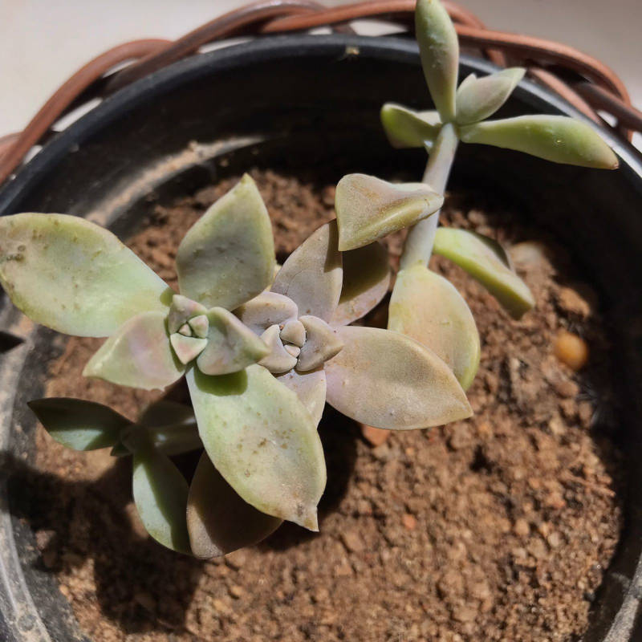

Caracteristicas e cuidados com a sua plantinha Suculenta
Suculenta — Planta-Fantasma
As plantas suculentas são aquelas que possuem raiz, o talo ou as folhas engrossados para permitir o armazenamento de água em quantidades muito maiores que nas plantas normais. Existe uma variedade absurda de espécies de plantas suculentas. Isso porque o termo designa plantas que conseguem reter água - e não apenas em suas folhas. Esse reservatório de água pode estar localizado também em seu tronco, caule, talo ou até mesmo em suas raízes. Como essas plantas são de ambientes muito áridos, o “super poder” do armazenamento é o que torna possível a sua sobrevivência.
A Planta Fantasma – Graptopetalum paraguayense é uma herbácea, pertence à família Crassulaceae, nativa do México, perene, suculenta, ereta, pendente, de 10-20 cm de altura e muito ornamental.
Descrição
Folhas em rosetas concentradas no ápice dos ramos, de lâmina espatulada, espessa, carnosa e glabra; a planta cresce a partir do centro da roseta. Estas plantas têm habilidades de mudança de cor, a pleno sol tornam-se amarelo-rosado, a meia sombra azul-esverdeadas. Um revestimento em pó fosco cobre as folhas desta planta, dando uma aparência fantasmagórica. Este revestimento é delicado e pode ser danificado pela manipulação. Inflorescências em racemos axilares, com longos pedúnculos que as dispõem acima da folhagem, com poucas flores estreladas de cor branco creme, de valor ornamental secundário. Surgem ocasionalmente na primavera-verão. A família Crassulaceae, possui plantas muito parecidas, causando uma grande confusão entre os gêneros Graptopetalum, Echeveria e Pachyphytums. Indicada para jardins de suculentas ou de pedras; em grupos formando maciços densos; também usada em vasos e jardineiras como planta pendente.
Cuidados com a Planta Fantasma
Clima: Tropical, Subtropical, Equatorial, Mediterrâneo, Oceânico, Semi-árido.
Resistente ao frio, mas não tolera geadas.
Cultivada a pleno sol ou meia sombra.
O solo deve ser rico em matéria orgânica, solto e muito bem drenado.
Uma boa mistura é: turfa, areia e um pouco de adubo orgânico ou misturas prontas para cactos e suculentas.
Regar somente quando o solo estiver seco, diminuindo muito no inverno. O solo encharcado provoca a podridão da planta.
Adubar no início da primavera com um fertilizante equilibrado para suculentas e diluído à ¼ da dose sugerida pelo fabricante.
Devido a fragilidade das hastes, é melhor escolher um local definitivo para a a planta.
A planta Fantasma pode ser podada para manter uma forma compacta.
Propagação
Multiplica-se por sementes, facilmente por estacas de ramos e por mudinhas que se formam, quando as folhas se desprendem da planta e caem no solo se enraizando em seguida.
Propagação
Multiplica-se por sementes, facilmente por estacas de ramos e por mudinhas que se formam, quando as folhas se desprendem da planta e caem no solo se enraizando em seguida.
©Kawanny Cristina-Bernarda da Silva - Alguns direitos reservados